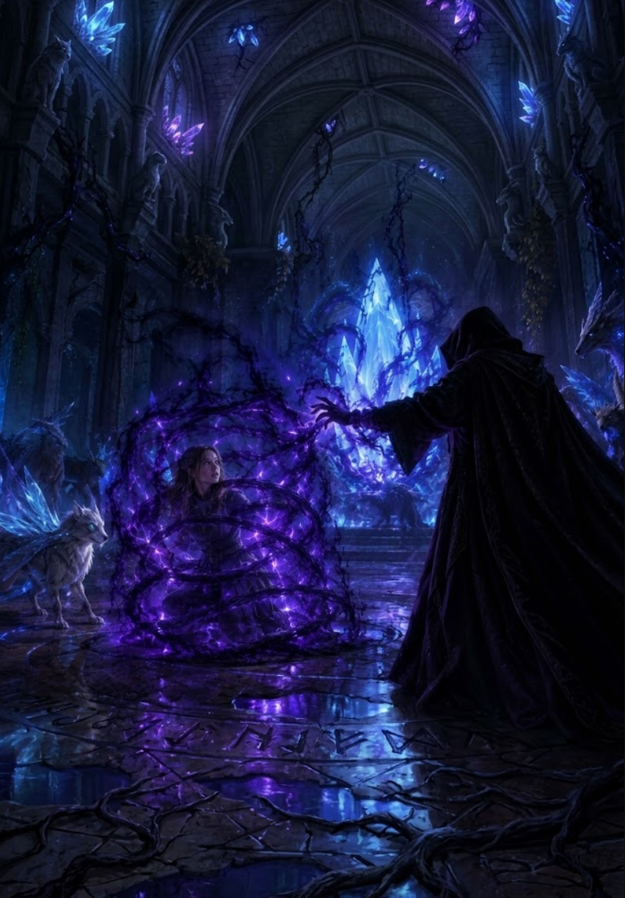

3/3
Camino Final: La Prisión de Sombras
🔊 Narración:
Ayla ataca directamente, pero el encapuchado sonríe y usa sus sombras para inmovilizarla en una prisión oscura..
Atrapada e indefensa, observa cómo el villano absorbe hasta la última gota de poder del cristal. Las criaturas huyen y el bosque se marchita al instante.
♦ ───── ♦
Esto no puede terminar así...
Ayuda a Ayla a salvar al bosque